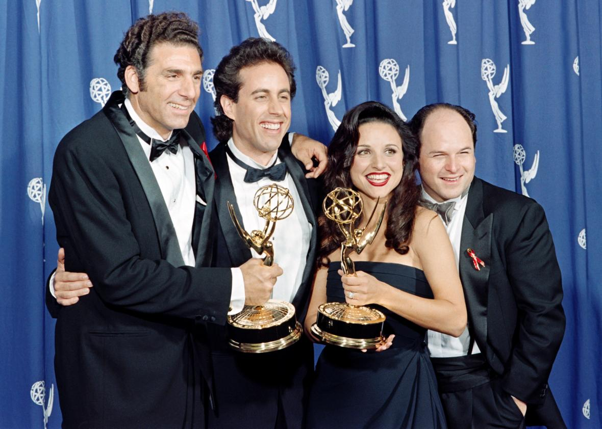
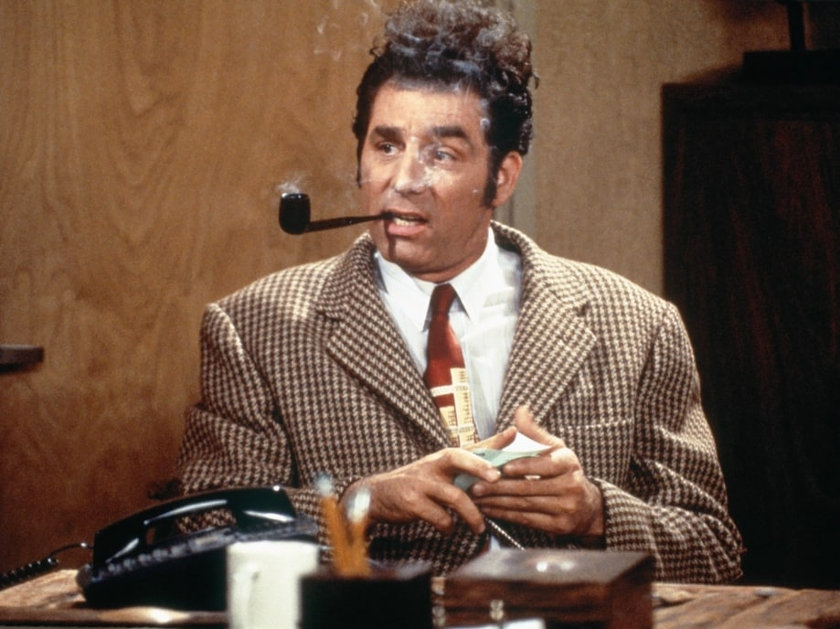

Monk's Cafe is the home to some of the most memorable moments on Seinfeld
Proud Winner of, "America's Best Diner" award in 1992
Featured on Kramer's Reality Tour
Stomping ground of the rich and famous of New York City, frequented by Senator John McCain

Proudly respresenting Monk's Cafe.

Visit with Michael Richards at Monk's!